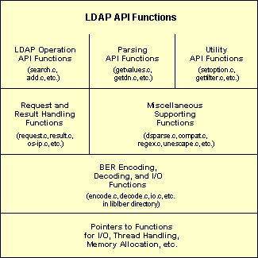
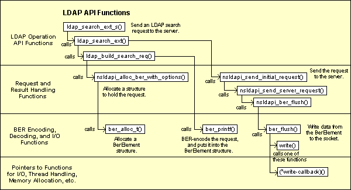
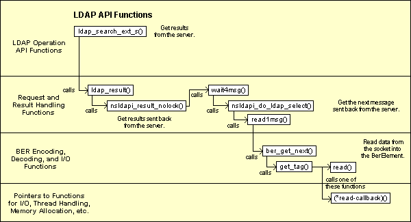

Overview
The source code for the Directory SDK for C consists of a
library that implements the LDAP API. This library defines
functions that can establish sessions with LDAP servers,
create and send LDAP requests to the servers, and retrieve
responses from the servers.
In the LDAP protocol, requests and responses are encoded using the Basic Encoding Rules (BER). The SDK source code include functions for encoding and decoding data, according to these rules.
Source Tree Directory Structure
The source code for the Netscape Directory SDK for C is organized
in the following directories:
mozilla/
cmd/
winfe/
mkfiles32/ // Tools used when building the SDK
config/
directory/
c-sdk/ // Main makefile
ldap/
build/ // Version information
include/ // Header files
libraries/
liblber/ // Functions for BER-encoding, decoding, and I/O
libldap/ // Functions implementing the LDAP API
macintosh/ // MacOS-specific files
msdos/ // Windows-specific files
winsock/ // Windows .def files
dist/ // Contains the built SDK (created
// when you build the SDK)

Roadmap of the Source Files
The different sets of functions and source code files are described below.
Header Files. The following header files define the internal structures used in this library:
ldap-int.h in the libldap directory
lber-int.h in the liblber directory
LDAP Operation API Functions. These API functions are responsible for
requesting LDAP operations from the server (such as ldap_search_ext_s()
and ldap_add_ext()).
These functions are defined in the following files:
abandon.c
add.c
bind.c,
sbind.c (simple bind),
saslbind.c (SASL authentication)
compare.c
delete.c
extendop.c (LDAP v3 extended operations)
modify.c
rename.c (includes modify RDN and modify DN operations)
search.c,
url.c (functions for performing searches from LDAP URLs)
unbind.c
In addition, functions defined in the following files implement other aspects of the LDAP protocol as well as extensions to the protocol:
open.c (ldap_init function)
control.c (general functions for LDAP v3 controls)
psearch.c (functions for "persistent search" and
"entry change notification" controls)
sortctrl.c (functions for "server-side sorting" controls)
vlistctrl.c (functions for "virtual list view" controls)
cldap.c (functions for CLDAP, Connectionless LDAP)
Parsing Functions. These API functions are responsible for
getting data from structures that represent entries, attributes, and other
containers (such as ldap_get_dn() and ldap_get_values()).
These functions are defined in the following files:
error.c (functions for getting error information
from the LDAP structure)
message.c (functions for getting data about LDAPMessage
structures and for getting these structures from search results)
referral.c (functions for handling smart referrals or
search references in search results)
getattr.c (functions for getting attributes from an entry)
getdn.c (functions for getting the DN from an entry and
for working with DNs)
getentry.c (functions for getting entries from search results)
getvalues.c (functions for getting values from an attribute)
countvalues.c (functions for counting the values in an attribute)
reslist.c (functions for adding and deleting entries from a list
of search results)
Utility Functions. These are utility functions in the API.
These functions are defined in the following files:
getoption.c (functions for getting session preferences)
setoption.c (functions for setting session preferences)
getfilter.c, ldapfilter.conf (functions for working
with filter configuration files)
sort.c (functions for sorting search results)
free.c, freevalues.c (functions for freeing memory)
memcache.c (functions for working with the in-memory cache)
friendly.c, ldapfriendly (functions for getting
the "friendly" version of a name from a mapping file)
ufn.c (functions for performing "user friendly" searches)
cache.c (functions for a generic cache)
srchpref.c, ldapsearchprefs.conf
(functions for using a search preferences configuration file)
disptmpl.c, tmplout.c, tmpltest.c,
ldaptemplates.conf (functions for using a template configuration
file to display search results)
Request and Result Handling Functions. These functions are responsible for generating and sending requests to an LDAP server and for handling results returned from an LDAP server. The LDAP operation functions call these functions to send LDAP requests and retrieve results from an LDAP server.
These functions are defined in the following files:
request.c (functions for generating and sending LDAP requests)
result.c (functions for getting results back from the server)
os-ip.c (platform-specific TCP- and UDP-related functions)
Miscellaneous Functions. These are miscellaneous functions.
These functions are defined in the following files:
charray.c (functions for manipulating char * arrays)
utf8.c (functions for handling UTF-8 character data)
unescape.c (functions for unescaping characters in a URL)
regex.c (functions for regular expression pattern matching
and replacement)
dsparse.c (functions for parsing template and search preference
configuration files)
compat.c (functions for compatibility across different platforms)
mozock.c (functions that implement an intermediate layer to
network services)
globals.c (global variables for the LDAP library)
dllmain.c (DLLMain for the LDAP API library)
nsprthreadtest.c, pthreadtest.c (test applications
for testing the capability to specify thread handling functions)
test.c (test application for testing the functions
in this library)
BER Encoding, Decoding, and I/O Functions. These functions encode requests and decode results, according to the Basic Encoding Rules (BER). The functions are also responsible for sending BER-encoded requests to the server and receiving BER-encoded results from the server.
These functions are defined in the following files, which are located in
the liblber directory:
decode.c (functions for decoding BER-encoded data)
encode.c (functions for BER-encoding data)
io.c (I/O functions for reading and writing BER-encoded data)
bprint.c (functions for printing debugging information)
dtest.c, etest.c (test applications for testing
the encoding and decoding functions in this library)
idtest.c (test application for testing the decoding functions
with the ISODE library)
Unused Functions. The following source files are not compiled or used in the library. (ifdefs are used to omit the entire source code in these files.)
getdxbyname.c
charset.c
The following diagrams illustrate how ldap_search_ext_s() calls
other library functions to generate and send an LDAP search request to the
server and to get results back from the server. Figure 1
illustrates how the function generates and sends the request, while
Figure 2 illustrates how the function gets results back.
Figure 1: How ldap_search_ext_s() generates and sends a search request.

Figure 2: How ldap_search_ext_s() gets search results.
